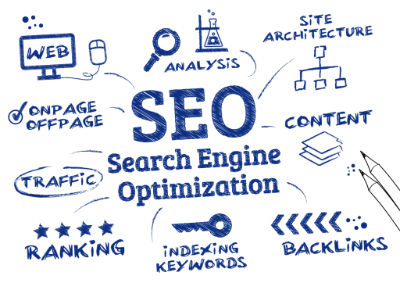
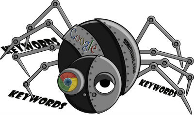
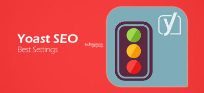

This is about a bot that Google has made that crawls every page of your website that it can find every single times.
In the search engine, the first one is always the most popular one.

Yoast is what allows you the main kind of what`s called matadata its the data behind the data.
The matadata is the stuff thats off page and the matadata is similar for Youtube and personal blog.
Yoast is going to show you how many characters you have you want to make sure you are within their characterlimit but you want to make sure you are using as many characters as you can.
The title is probably one of the most important indicators to Google and Youtube on what you content is about and the same rule applies for your Youtube video.
Good headlines get people to take action.
A title should be readable and understandable to human
Make sure these keyword phrases are in there as often as possible.
We use red color and the keywords above for our file name and the alt text, so we know it belongs here with the titile.
one post is about one topic, it is about one grouping of ideas.
We should try to structure our content in a way that shows Google what the most revelant ideas are throught out our content.
We can link the answers that we post on Quorra and Twitter also.
The right way to gain links is to write content that is so good that people simply link back to it.
Usually, we write our main tittle with using h1 tag and writing subtittle with using h2,h3.... tittles. Each tittle is for different topics.
Each h2 subtitles should have keywords about the topic.
Subkeyword and subtittle is the spinkle of the mian keyword and main titlle
We might put many videos on our blog. The videos we put should be relative videos rather than trash videos. We can embed other people's videos but our own viedeos are the best.
We should embed a seprate link for explain our keywords rather than explain it in our content. And the link of the keywords should be a complete sentence.